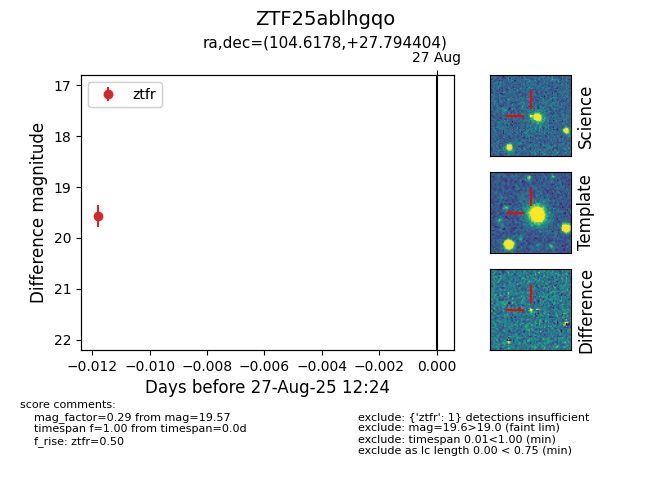

Target ZTF25ablhgqo at 2025-08-27 12:24, see:
FINK: fink-portal.org/ZTF25ablhgqo
Lasair: lasair-ztf.lsst.ac.uk/objects/ZTF25ablhgqo
ALeRCE: alerce.online/object/ZTF25ablhgqo
alt names
ZTF25ablhgqo (ztf,fink)
coordinates:
equatorial (ra, dec) = (104.6178,+27.79440)
galactic (l, b) = (188.4498,+13.69676)
photometry
last ztfr=19.57
1 ztfr detections
